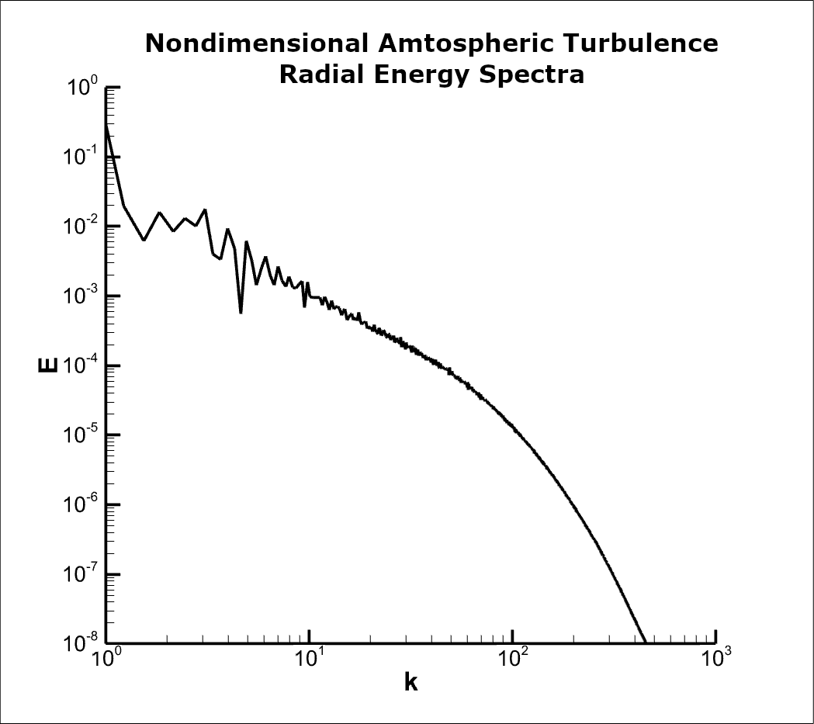
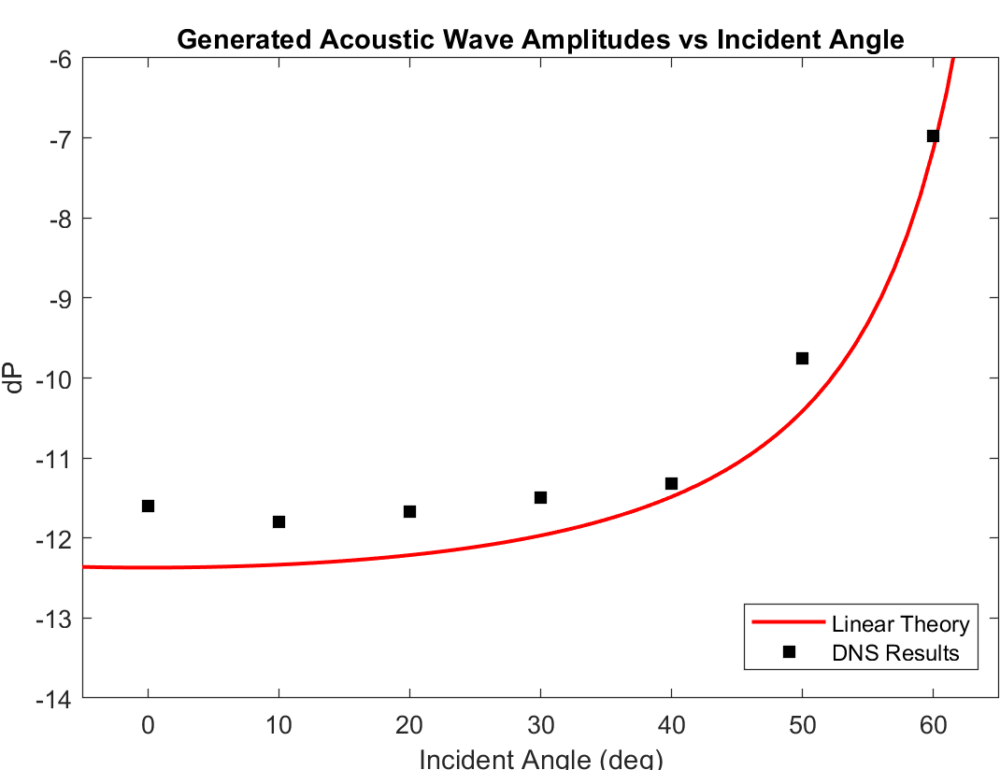
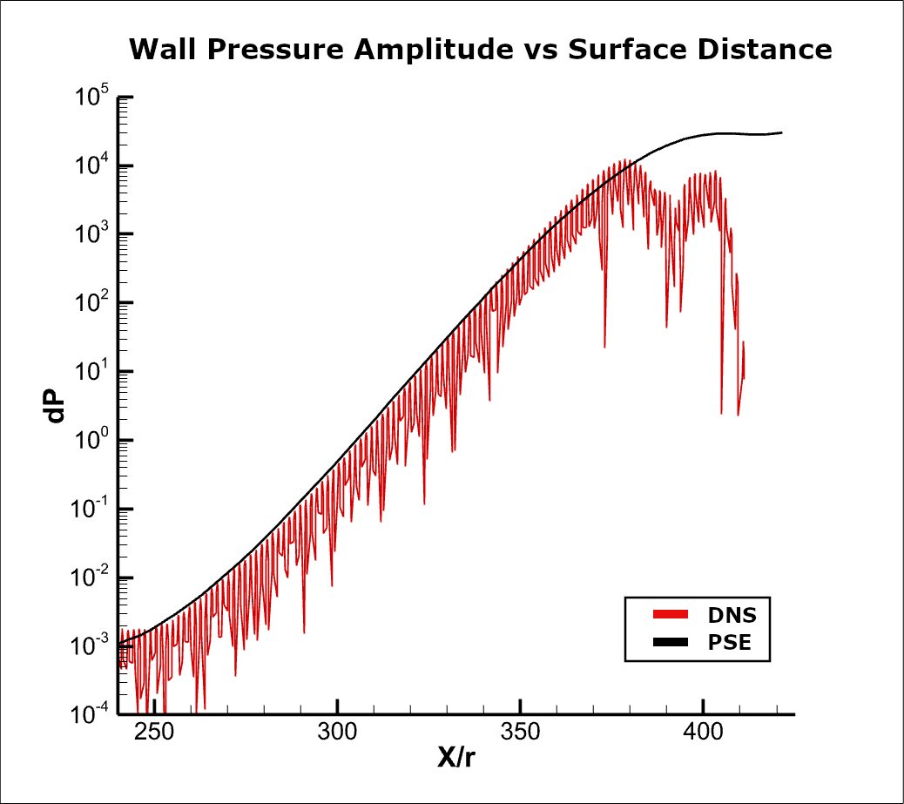
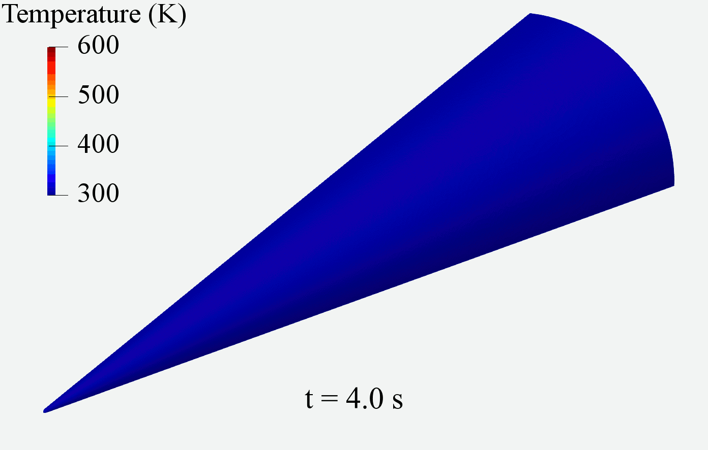
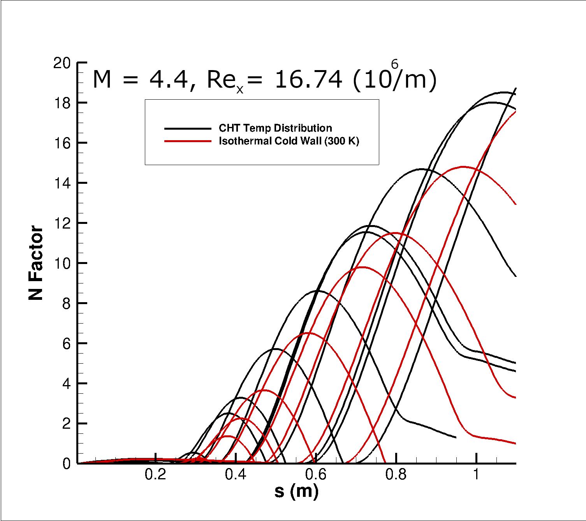

Here are descriptions of and links to research papers I've written or collaborated on
Investigation of Atmospheric Turbulence and Shock Interaction for a Hypersonic Sphere-cone
Authors: Luke J. Melander and Graham V. Candler
Publication Date: TBD, 2021
Abstract
Laminar to turbulent boundary layer transition is known to be sensitive to freestream disturbances. However, the disturbances in the upper atmosphere are not well characterized, and a multi-university effort to characterize turbulence and particle distributions in the stratosphere aims to address that. This paper considers the numerical methods associated with simulating shock-turbulence interactions for a hypersonic sphere-cone. Atmospheric turbulence is first generally characterized, and then a turbulent shear simulation is characterized in relation to hypersonic flight in order to establish a method for simulating the interaction between hypersonic vehicles and atmospheric turbulence. Low-dissipation Direct Numerical Simulation (DNS) methods for the compressible Navier-Stokes equations are compared with linear equations for planar wave and oblique shock interaction and found to accurately simulate the shock-disturbance interaction. Linear growth of boundary layer waves due to interaction with the second mode instability in hypersonic boundary layer is also simulated with low dissipation DNS and found to compare well with predictions from the Parabolized Stability Equations (PSE). Lastly, atmospheric turbulence in relation to hypersonic flight and simulation requirements to determine it's effect on hypersonic boundary layer transition are discussed.



Stability Analysis of HIFiRE-1 with Flight Wall Temperatures
Authors: Luke J. Melander, Anthony Knutson, John D. Reinert, and Graham V. Candler
Publication Date: June 8, 2020
Abstract
Laminar to turbulent boundary layer transition is sensitive to wall temperature distribution and freestream disturbances. The wall temperature can increase the boundary layer thickness and affect the growth rate of disturbances in the boundary layer. Additionally, the receptivity and growth mechanisms in the boundary layer can capture and grow small amplitude disturbances that eventually cause transition. The goal of this paper is to use new capabilities to better inform the PSE analysis and introduce the feasibility of performing receptivity analysis with DNS. The ascent trajectory for HIFiRE-1 is simulated using a loosely coupled conjugate heat transfer solver. The wall temperature data is then used as a boundary condition for the PSE analysis. The PSE analysis agreed with prior analysis for hypersonic blunt nose cones. Furthermore, the PSE results showed large differences in the second-mode growth rate depending on the treatment of the wall temperature boundary condition.
Finally, the capability for performing receptivity analysis with DNS is verified for a simple test case. Future work will use this new capability for inputting freestream disturbances into the flow field for HIFiRE-1.


I'll be updating this with links to papers I've written, and eventually my thesis when it's published